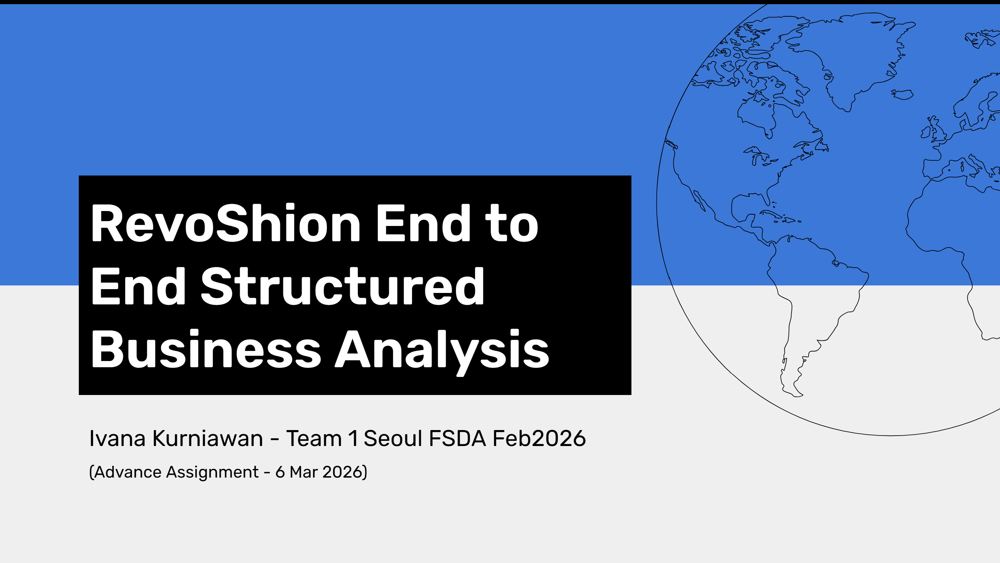

Business Analysis and Process Improvement
Investigated a 13.6% decline in corporate segment profitability through hypothesis-driven business analysis, uncovering product, pricing, and geographic factors behind profit leakage and delivering five prioritized initiatives to achieve 25% profit growth.

Project Overview
Summary / Context
Conducted an end-to-end business analysis on RevoShion's corporate sales segment after profit growth declined significantly despite increases in sales, orders, and customers. The project investigated profitability drivers across products, pricing, customer behaviour, and regional performance.
Goals
Identify the root causes of declining profitability and develop strategic initiatives capable of increasing corporate segment profit growth to 25% by the end of 2023.
Process
Performed stakeholder mapping, built issue trees and business hypotheses, defined analytical metrics, analyzed profitability across categories and locations, and prioritized recommendations using an Impact-Effort matrix.
Output
Identified that Technology and Furniture categories contributed most to profit decline, uncovered persistent losses across nine states, and developed five prioritized recommendations focused on pricing, product mix, discount management, quality improvements, and regional strategies.
Key Achievements
Tools & Methods
Tools
Methods
Project Visuals